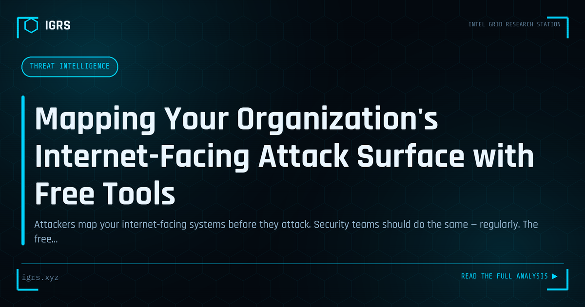

Mapping Your Organization's Internet-Facing Attack Surface with Free Tools
| File No. | IGRS-047/2026 |
| Subject | Attack surface discovery methodology using Shodan, Censys, and free open-source tools |
| Category | Threat Intelligence |
| Author | Manuj Kumar Pandey |
| Published | 2026-04-27 |
| Reading time | 12 minutes |
Attackers map your internet-facing systems before they attack. Security teams should do the same — regularly. The free tools and methodology for attack surface discovery.
Open Ports and Attack Surface Management
Every open port on an internet-facing system is a potential entry point for attackers. Attack surface management — the practice of discovering, assessing, and reducing exposed services — is fundamental to defence. For Indian organisations and investigators, understanding open ports reveals both an organisation's exposure and an attacker's reconnaissance view. This guide explains open ports, attack surface, and how to manage them.
What Open Ports Reveal
Ports are the doors through which network services communicate. An open port indicates a running service that accepts connections — a web server, database, remote access, or other application. Each exposed service represents attack surface: a potential target for exploitation if it is vulnerable, misconfigured, or weakly authenticated. Attackers begin reconnaissance by scanning for open ports to map what they can attack.
Commonly Exposed Services
| Port | Service | Risk If Exposed |
|---|---|---|
| 22 | SSH | Brute force, weak credentials |
| 3389 | RDP | Ransomware entry point |
| 3306 | MySQL | Database exposure |
| 445 | SMB | Worm and ransomware spread |
| 23 | Telnet | Unencrypted, easily compromised |
The Attacker's Reconnaissance View
Tools like Shodan and Censys continuously scan the internet, cataloguing exposed services. Attackers use these to find vulnerable targets without even scanning themselves. An organisation can use the same tools to see itself as attackers do — discovering forgotten servers, exposed databases, and services that should never face the internet. This outside-in view is a powerful starting point for attack surface management.
Discovering Your Attack Surface
Effective management begins with discovery. This involves scanning your own IP ranges for open ports, querying Shodan and Censys for your assets, identifying shadow IT and forgotten systems, and mapping all internet-facing services. Many breaches exploit assets the organisation did not know were exposed, so comprehensive, ongoing discovery is essential — the attack surface is not static and grows as systems are added.
Reducing Exposure
Once discovered, exposure is reduced systematically: closing unnecessary ports and disabling unused services, placing services behind VPNs or firewalls rather than exposing them directly, enforcing strong authentication on what must be exposed, and patching exposed services promptly. The principle is minimisation — every service that does not need to face the internet should not, dramatically shrinking what attackers can reach.
High-Risk Exposures
Certain exposures are especially dangerous. Exposed RDP is a leading ransomware entry point and should never face the internet directly. Exposed databases frequently leak data when left without authentication. Legacy protocols like Telnet transmit credentials in plaintext. Industrial control and IoT devices often have weak security. Prioritising these high-risk exposures for immediate remediation addresses the most likely attack paths first.
Continuous Attack Surface Management
Attack surface management is ongoing, not a one-time audit. New systems, cloud deployments, and configuration changes continuously alter exposure. Continuous monitoring detects new exposures quickly, while regular assessment ensures controls remain effective. For Indian organisations facing persistent scanning and exploitation, maintaining a minimal, well-understood attack surface is among the most effective defensive measures — you cannot be attacked through a door that is not open. Combining self-scanning, Shodan monitoring, and disciplined service minimisation turns attack surface management into a continuous defensive advantage.